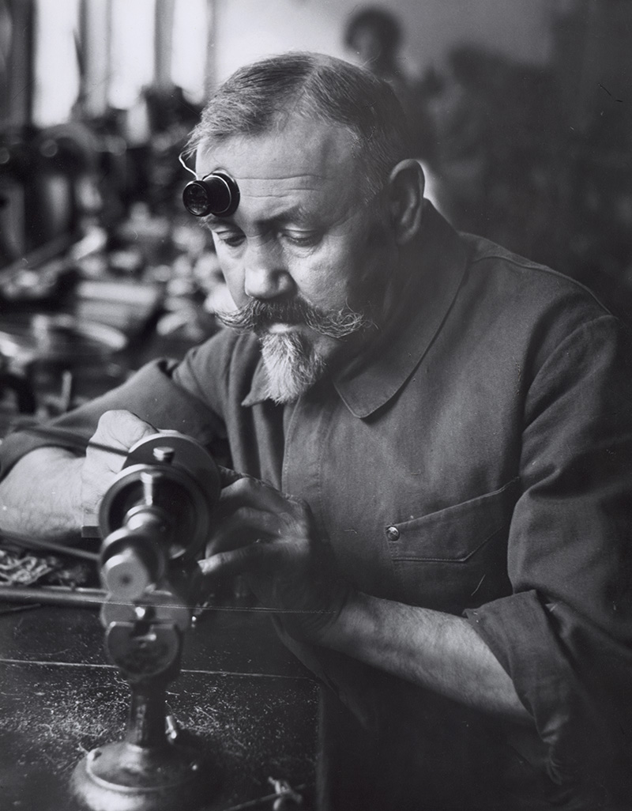

Notre démarche repose sur la recherche de l'excellence et du raffinement dans l'univers du luxe également (automobile, horlogerie, art).
PHILOSOPHIE

Un horloger chez Patek Philippe, vers 1950. Musée national suisse
L'horlogerie suisse représente l'excellence et la précision depuis des siècles. Chaque pièce de notre collection incarne cet héritage d'exception.
NOS COLLECTIONS
Mini véhicules
Modèles réduits et miniatures de collection
Découvrir
Voitures
Automobiles de prestige et véhicules d'exception
Découvrir
Montres
Horlogerie de prestige et pièces d'exception
Découvrir
Art
Œuvres d'art contemporain et pièces de galerie
Découvrir
Association
Engagement solidaire et partenariats caritatifs
Découvrir